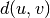
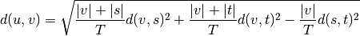
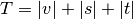
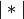
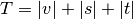
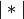

sklearn.cluster.ward_tree¶
-
sklearn.cluster.ward_tree(X, connectivity=None, n_clusters=None, return_distance=False)[source]¶ Ward clustering based on a Feature matrix.
Recursively merges the pair of clusters that minimally increases within-cluster variance.
The inertia matrix uses a Heapq-based representation.
This is the structured version, that takes into account some topological structure between samples.
Read more in the User Guide.
Parameters: X : array, shape (n_samples, n_features)
feature matrix representing n_samples samples to be clustered
connectivity : sparse matrix (optional).
connectivity matrix. Defines for each sample the neighboring samples following a given structure of the data. The matrix is assumed to be symmetric and only the upper triangular half is used. Default is None, i.e, the Ward algorithm is unstructured.
n_clusters : int (optional)
Stop early the construction of the tree at n_clusters. This is useful to decrease computation time if the number of clusters is not small compared to the number of samples. In this case, the complete tree is not computed, thus the ‘children’ output is of limited use, and the ‘parents’ output should rather be used. This option is valid only when specifying a connectivity matrix.
return_distance: bool (optional) :
If True, return the distance between the clusters.
Returns: children : 2D array, shape (n_nodes-1, 2)
The children of each non-leaf node. Values less than n_samples correspond to leaves of the tree which are the original samples. A node i greater than or equal to n_samples is a non-leaf node and has children children_[i - n_samples]. Alternatively at the i-th iteration, children[i][0] and children[i][1] are merged to form node n_samples + i
n_components : int
The number of connected components in the graph.
n_leaves : int
The number of leaves in the tree
parents : 1D array, shape (n_nodes, ) or None
The parent of each node. Only returned when a connectivity matrix is specified, elsewhere ‘None’ is returned.
distances : 1D array, shape (n_nodes-1, )
Only returned if return_distance is set to True (for compatibility). The distances between the centers of the nodes. distances[i] corresponds to a weighted euclidean distance between the nodes children[i, 1] and children[i, 2]. If the nodes refer to leaves of the tree, then distances[i] is their unweighted euclidean distance. Distances are updated in the following way (from scipy.hierarchy.linkage):
The new entry  is computed as follows,

where
 is the newly joined cluster consisting of
clusters
is the newly joined cluster consisting of
clusters  and
and  ,
,  is an unused
cluster in the forest, , and
 is the cardinality of its argument. This is also
known as the incremental algorithm.
is an unused
cluster in the forest, , and
 is the cardinality of its argument. This is also
known as the incremental algorithm.